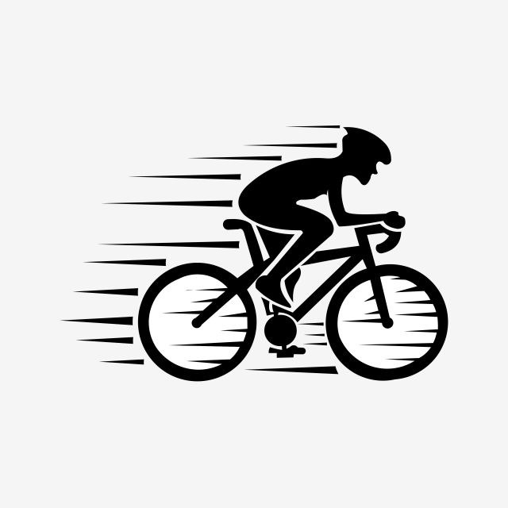

Hurtownia rowerowa to miejsce, gdzie znajdziesz wszystko, co potrzebujesz, aby wyposażyć swój sklep w najwyższej jakości rowery oraz części zamienne. Oferujemy szeroką gamę produktów od renomowanych producentów, takich jak Shimano, Giant, Merida i wiele innych.
Nasza oferta obejmuje rowery górskie, szosowe, miejskie oraz elektryczne. Zapewniamy również bogaty wybór części zamiennych, takich jak opony, łańcuchy, hamulce oraz akcesoria rowerowe.
|  |
Działamy na rynku od ponad 20 lat, dostarczając produkty zarówno dla klientów indywidualnych, jak i biznesowych. Dzięki współpracy z najlepszymi dostawcami, gwarantujemy najwyższą jakość naszych produktów.
© 2024 Kuba Bielecki